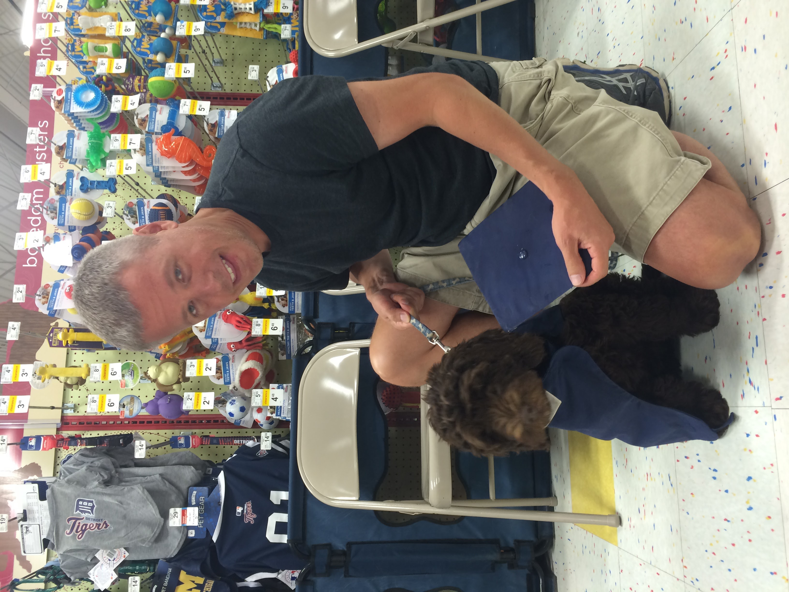

Bacon Q Dog

Brown labradoodle wearing colorful lei
Bacon Q. Dog is a 9yr old labradoodle. He prefers to spend his days lounging among the three different beds/couches that his family has gifted him. He enjoys a walk or two around the neighborhood, as long as he can pretend that he doesn't see any of the other animals to avoid the embarrassment of not wanting to admit he has no wolf-like skills in chasing them.
At night just as the rest of the family is ready to relax, Bacon suddenly wants to release all of his energy. He will place his toys on a mini couch and frantically drag the couch around, giving his toys "a ride." There is also a lot of rolling. Lots and lots of rolling.
Photo Gallery

Bacon wearing an orange bandana
Bacon as a puppy wearing a graduation cap and gown
Bacon demonstrating his sit and stay skills

Bacon wearing a pirate costume
Likes
- Belly rubs
- Playing tug-of-war
- Sneaking onto the couch
"Colleen van Lent"
Fitz

Boston terrier watching a tennis ball at the table
Loves chasings tennis balls, chipmunks, squirrels, and birds. Often found sitting by the fire in wintertime, and in sun patches when available. He’s energetic, mischievous, and easily bored. He loves people and gets grumpy if left without a lap too long.
Loves barking up trees, running around on the lawn, and digging in the dirt looking for moles. He especially likes getting treats and whines when he comes inside and doesn’t get a snack.
Photo Gallery

Fitz standing on a wooden chair, looking at the camera.

Fitz sleeping in a fuzzy dog bed.

Fitz laying out on the lawn in the grass.

Fitz sleeping with his face buried in a plaid blanket, only his head is visible.
Likes
- Blankets
- Being warm
- Barking
"Kay Malan + Anna Vento"
Cody

Cody at home
Cody is a 7yr old Pembroke Corgi. He was born in Cavalier Farms, Seattle. He prefers to spend his days lounging on the bean bag. Every day, he enjoys two walks around the neighborhood and likes to make friends with other doggie friends. If lucky enough, he might see the cyclist, but he is not allowed to give chase.
Cody loves traveling. He enjoys walking on the beach and taking sun naps. But he hates cold weather. He would like to stay at home lounging by the fireplace in winter.
Photo Gallery

Cody lying on the ground making faces.

Cody visiting Badwater Basin in Death Valley National Park.

Cody having a walk by the sea.

Cody lounging by the fireplace in winter.
Likes
- Traveling
- Lounging
- Tennis balls
"Yuqing Zhang"
Cody

Silver gradient British shorthair cat in a wedding dress
Miumiu is a five-year-old silver gradient British shorthair cat. She was born in Russia and raised in the United States and China. She is a mom of two babies. She loves to sleep.
Miumiu is kind of timid and afraid to meet strangers. But she is very close to her family, she loves to lie next to her family. She is very talkative and loves to meow.
Photo Gallery

Silver gradient British shorthair cat in a pink bag

Silver gradient British shorthair cat lying on the bed

Silver gradient British shorthair cat sleeping on the bed

Silver gradient British shorthair cat under the sunshine
Likes
- Chicken breast
- Sleeping
- Observing birds outside the window
"Mengyun Liu"
Sage

Brown striped tabby wearing a santa hat.
Sage is a 3 year old Golden Retriever. She is one of the laziest dogs. She loves sneaking into the bedroom and hopping onto the neatest bed. She also loves riding in a car with the windows open feeling the wind and air. She enjoys walking, only if you take her for a ride to a big arboretum or park. Walking around the neighborhood is not necessarily her cup of tea.
Her favorite food is corn. One day, she stole corn on the cob from the dining table, which was surprising because she is normally gentle and polite. She took the stolen corn to the patio and enjoyed her meal by herself. Unfortunately, the corn turned out to be unripe, so she ended up vomiting it all later.
Photo Gallery

A young golden retriever is laying down

A happy golden retriever is sitting in the car’s backseat.

A golden retriever is sleeping on the couch.

A man’s hand is petting a golden retriever’s neck.
Likes
- Carrot
- Nap
- Big park
"Justin Lee"